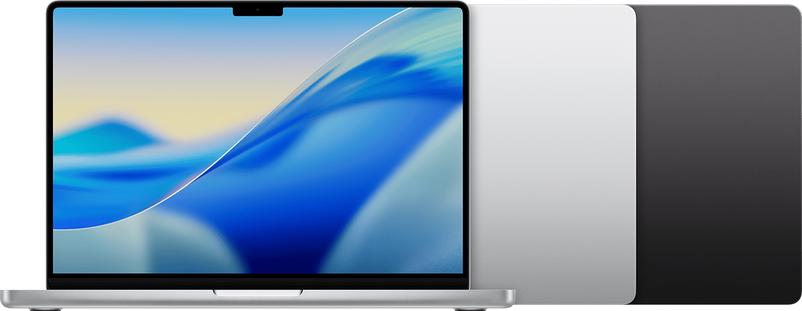
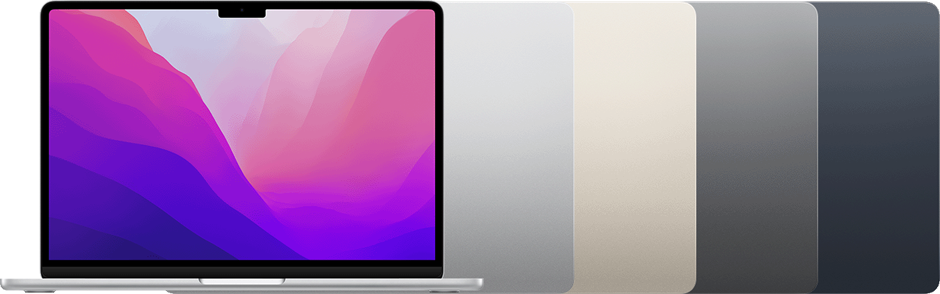

Productivity
Less downtime during heavy work
I often need to pause or change my workflow when performance drops. A Pro-class machine helps me keep moving, especially on long sessions.
My role now consistently involves full-stack development, extended testing, screen recording, and increasing 3D workflows. The MacBook Air M2 can still handle light tasks, but under sustained load it throttles and slows down, which directly impacts delivery speed and quality. A MacBook Pro M5 will help me stay productive, reduce downtime, and deliver work more reliably.

This isn’t a “nice to have” request. My current laptop is becoming a bottleneck during heavy tasks. When the machine overheats or slows down, I lose focus and time—especially during builds, testing cycles, and recording sessions. The upgrade is a practical step to protect delivery timelines and reduce friction day-to-day.
I often need to pause or change my workflow when performance drops. A Pro-class machine helps me keep moving, especially on long sessions.
When the system slows down, it increases iteration time and makes debugging harder. Stable performance improves accuracy and confidence.
These tasks are resource-heavy and sustained. The Air can burst, but it struggles to hold performance when the work becomes continuous.
A Pro machine extends usable life for heavier toolchains and evolving requirements, reducing the likelihood of another upgrade soon.
These points reflect what I’m experiencing in my daily work and why a MacBook Pro M5 is a better fit than my current MacBook Air M2.

I’m now running heavier front-end and back-end workloads in parallel, alongside screen recording and new 3D work. The Air M2 still works, but under sustained load it becomes noticeably slower. A Pro M5 gives me the headroom to build, test, and switch contexts across multiple projects without constant performance compromises.
The Air has no fan, so when I’m compiling, running extended tests, and recording, heat builds up and the machine throttles. That’s when I see lag and have to wait for it to cool down. The Pro’s cooling is designed for sustained workloads, which means more consistent speed and fewer interruptions.
After long-term use, the battery no longer lasts like it used to. This reduces flexibility when I’m away from a charger or moving between meetings and workspaces. A new machine restores reliable battery performance for mobile work.
My daily setup often includes multiple repos, builds, containers, browser tabs, meetings, and tools running together. When the Air slows down, the overall flow breaks: builds take longer, switching apps becomes sluggish, and small waits add up. The Pro M5 is a better match for this “always-on” multitasking style.
I regularly connect external displays, storage, and peripherals. With the Air, adapters and limited ports create setup friction and slow transitions between home/office setups. A Pro configuration typically reduces adapter dependence and makes my workstation more stable and consistent.
I’m requesting approval to upgrade to a MacBook Pro M5 to support sustained performance needs and reduce downtime. This upgrade directly supports faster iteration, more reliable testing, and smoother delivery for my current responsibilities.